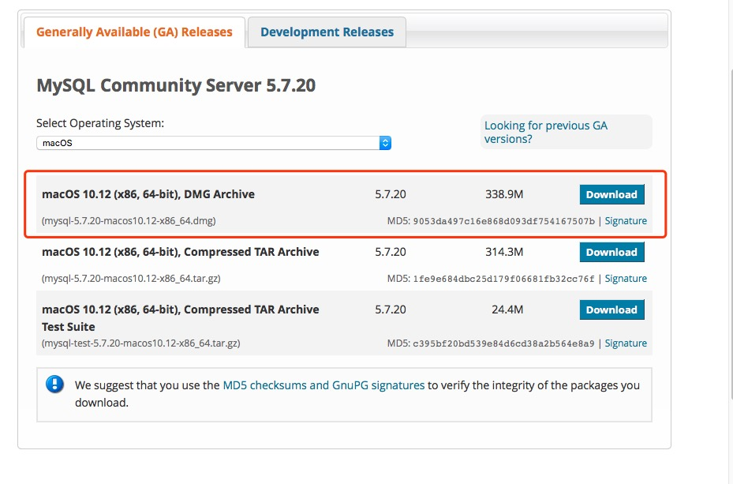
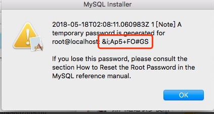
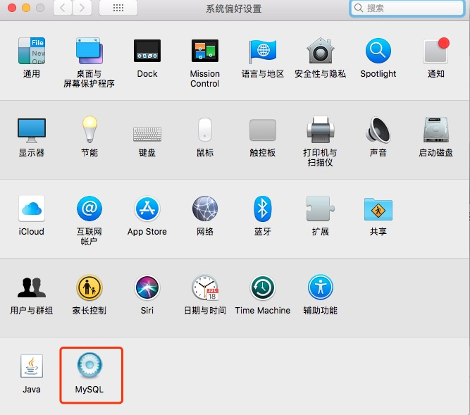
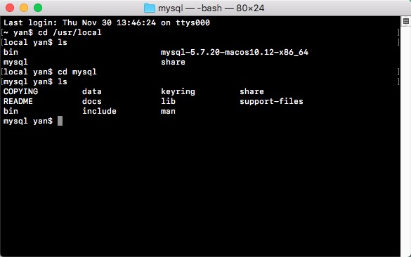
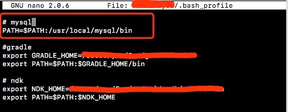
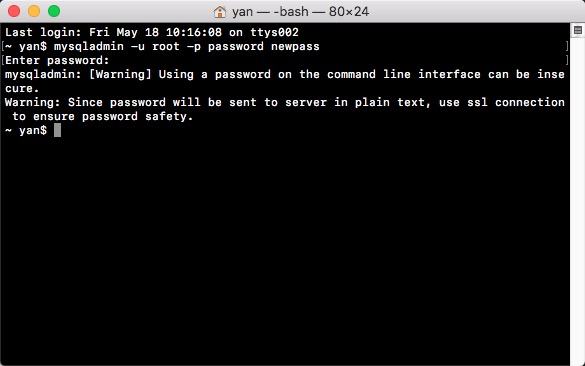
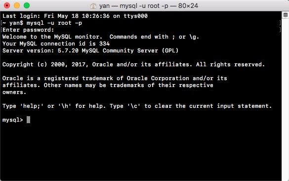
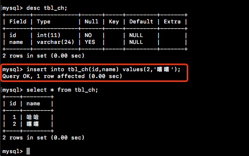

官网下载MySQL
下载连接：https://dev.mysql.com/downloads/mysql/

安装MySQL
下载完毕后直接双击安装即可。安装最后记得截图保存初始密码。 
查看安装结果
在系统偏好设置中可以查看MySQL是否已被安装上。

双击，打开MySQL Server。

配置环境变量
初次安装MySQL，在终端输入命令，mysql会提示命令找不到，需要配置一下环境变量。
可以先查看/usr/local是否有mysql这个文件目录。

执行命令nano或者vim修改bash_profile文件添加mysql bin文件的路径。

保存，执行命令source ~/.bash_profile。
修改初始密码
执行命令mysqladmin -u root -p password yournewpass
输出刚刚截图保存的初始化密码，即可完成密码修改，yournewpass就是修改后的密码。

登录MySQL
执行命令mysql -u root -p，输入修改后的密码，即可登录。
注意另起一个窗口。

使用命令创建表
登录MySQL后即可使用命令创建数据库，数据表，插入数据等增删改查操作。
创建数据库
create database [name]
使用数据库
use [name]
创建数据表
create table tbl_test(
id int not null,
name varchar(64) not null
);
插入数据
insert into tbl_test(id,name) values(1,'yanyan');
中文字符串插入问题
MySQL默认是使用latin1编码，他有另外一个我们大家都很熟悉的名称，叫ISO-8859-1，做过后台开发的人都知道，当网页编码为ISO-8859-1时，是不能输入中文字符串的。
查看MySQL编码，执行命令show variables like 'char%'。

注意：除了character_set_filesystem 和 character_sets_dir ，其它圈出来的几个编码均要修改为utf8。
同样，在MySQL中，如果没有设置编码的话，是输入不了中文字符串的。找到MySQL安装目录下的my.cnf或者my.ini，添加或者修改以下内容：
[mysqld]
character-set-server=utf8
[client]
default-character-set=utf8
MacOs的用户如果找不到my.cnf文件，可以在/etc下新建my.cnf文件，并写入如上内容，保存即可。
保存完毕后，最好重新打开终端登录MySQL，不重新打开其实也可以，不过为了避免一些不必要的异常，建议还是另起一个命令行窗口登录MySQL。
再次执行show variables like 'char%'查看是否已修改成功。
修改完毕，注意数据库也要重新创建，否则你会发现还是不能输入中文，我一开始就在这个地方卡了很久，我想已经创建了的数据库还是沿用之前的编码，你也可以通过修改原有的数据库编码。
另外，如果你不嫌麻烦的话，也可以在每一次创建表的时候带上编码的声明，如果是这种声明方式的话，即使不修改MySQL的默认编码，也是可以实现中文输入的。如下例子：
create table tbl_ch(
id int not null,
name charchar(64) character set gbk);
最后，执行结果如下：
